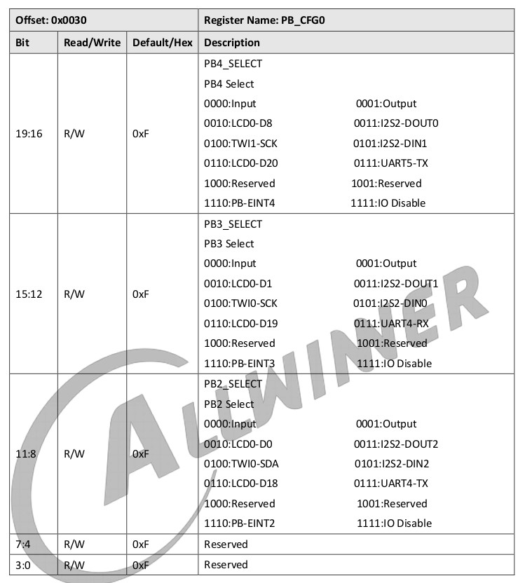
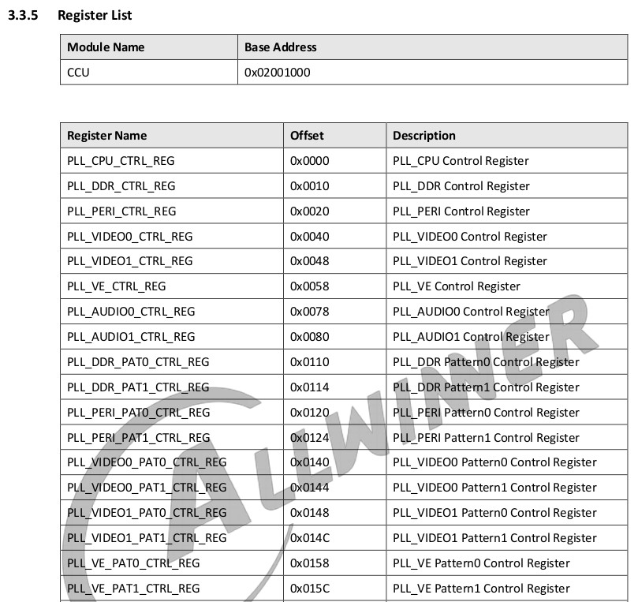
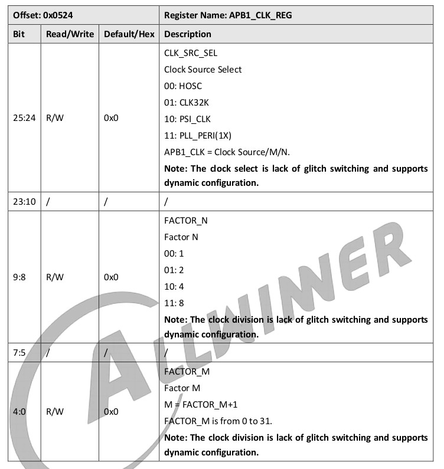
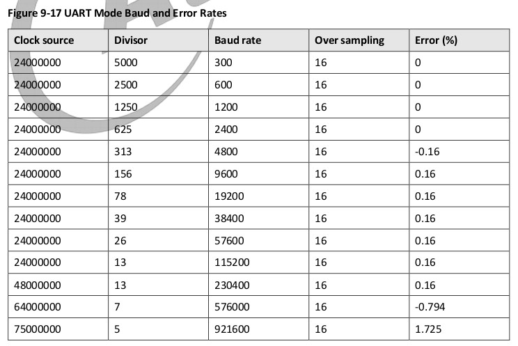
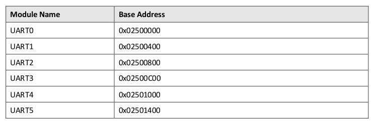
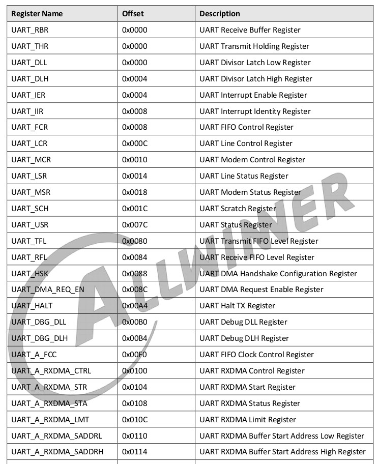
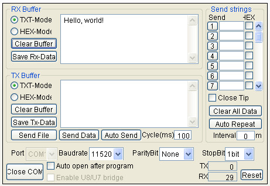

https://en.wikipedia.org/wiki/Delay_slot
https://github.com/Ouyancheng/FlatHeadBro
https://datasheet.lcsc.com/lcsc/1810231210_Worldsemi-WS2812C_C114587.pdf
UART是連接到PB2、PB3

PB2、PB3
參考資訊：
https://en.wikipedia.org/wiki/Delay_slot
https://github.com/Ouyancheng/FlatHeadBro
https://datasheet.lcsc.com/lcsc/1810231210_Worldsemi-WS2812C_C114587.pdf
UART是連接到PB2、PB3
PB2、PB3






.global _start
.equ CCU_BASE, 0x02001000
.equ GPIO_BASE, 0x02000000
.equ UART4_BASE, 0x02501000
.equ PB_CFG0, 0x0030
.equ UART_BGR_REG, 0x090c
.equ RBR, 0x0000
.equ THR, 0x0000
.equ DLL, 0x0000
.equ DLH, 0x0004
.equ IER, 0x0004
.equ IIR, 0x0008
.equ LCR, 0x000c
.equ MCR, 0x0010
.equ LSR, 0x0014
.equ USR, 0x007c
.text
.long 0x4000006f
.byte 'e','G','O','N','.','B','T','0'
.long 0x5F0A6C39
.long 0x8000
.long 0, 0
.long 0, 0, 0, 0, 0, 0, 0, 0
.long 0, 0, 0, 0, 0, 0, 0, 0
.org 0x0400
_start:
li t0, 0x7700
li a0, GPIO_BASE + PB_CFG0
sw t0, 0(a0)
li t0, (1 << 20) | (1 << 4)
li a0, CCU_BASE + UART_BGR_REG
sw t0, 0(a0)
li t0, 0
li a0, UART4_BASE + IER
sw t0, 0(a0)
li t0, 0
li a0, UART4_BASE + MCR
sw t0, 0(a0)
li a0, UART4_BASE + LCR
lw t0, 0(a0)
li t1, (1 << 7)
or t0, t0, t1
sw t0, 0(a0)
li t0, 13
li a0, UART4_BASE + DLL
sw t0, 0(a0)
li t0, 0
li a0, UART4_BASE + DLH
sw t0, 0(a0)
li a0, UART4_BASE + LCR
lw t0, 0(a0)
li t1, ~(1 << 7)
and t0, t0, t1
sw t0, 0(a0)
lw t0, 0(a0)
li t1, ~(0x1f)
and t0, t0, t1
li t1, 0x03
or t0, t0, t1
sw t0, 0(a0)
la a1, hello
0:
li a0, UART4_BASE + LSR
lw t0, 0(a0)
li t1, (1 << 5)
and t0, t0, t1
beqz t0, 0b
li t0, 0
lb t0, 0(a1)
li a0, UART4_BASE + THR
sb t0, 0(a0)
add a1, a1, 1
bgtz t0, 0b
1:
j 1b
.align
hello: .asciz "Hello, world!"
.end
完成
